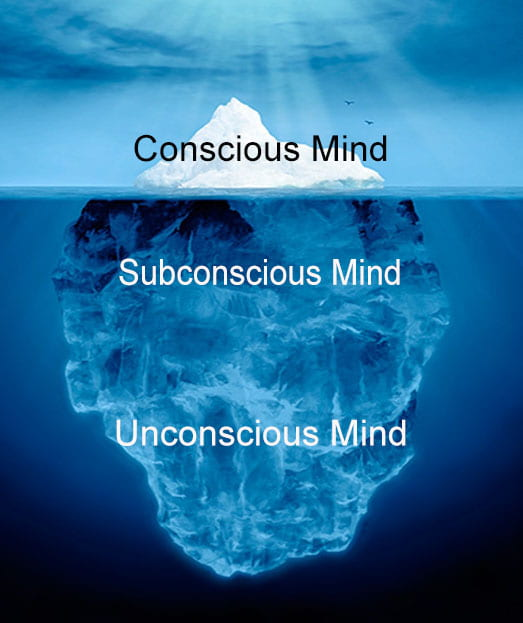

What is Hypnotherapy
How many times have you asked yourself:
- What is hypnosis and what is it for?
- Is it possible to solve some seemingly intractable problems or even diseases with the help of hypnosis?
- How does hypnosis work? Who are the people who practice hypnosis?
Before I start explaining hypnosis, I would like to ask you to put aside for a moment all your previous knowledge, thoughts and assumptions about hypnosis. I say this because it is very possible that by watching Hollywood movies and listening to various stories, you have got a completely wrong idea about hypnosis.
Unfortunately, most people "think" of hypnosis as something mystical, manipulative, or a set of tricks performed on stage. Such an opinion leads them to remain ignorant of the real possibilities of hypnosis and thus automatically deprive themselves of all its benefits. Yes, I said "benefits", because hypnosis represents the basic form of our internal communication, and thus it is a complete natural ability of every human being. And not only that, but we all use it "non-stop", our whole life!
How Hypnotherapy works
The Conscious, Subconscious and Unconscious Mind
Conscious Mind
This is the level of mind that deals with our senses: sight, hearing, taste, smell and touch. All our senses are turned and directed towards the outside world.
Therefore, the main task of our consciousness is gathering information from the outside world.
By gathering various information through our senses, consciousness has the important task of learning the knowledge and skills we need to survive in this world.
Since consciousness is the 'outer' level of the mind, all incoming information is automatically compared with our internal, pre-existing knowledge and experience of it.
That comparison works as a 'reality filter' of our mind, so that any information about which we already have existing knowledge and experience is treated in accordance with our existing knowledge.
This process of comparing new information with our existing knowledge and experiences automatically activates the 'critical feature' of our consciousness.
Subconscious Mind
This is the level of the mind, which controls all the happenings in our body, including the head, and therefore our life. Our subconscious never deals with the outside world, but only with us personally. The subconscious handles and manages the information that reaches our consciousness from inside our body, and that is the only thing it is interested in and deals with. That internal information manifests itself in the form of bodily sensations, which we physically feel within ourselves and therefore call them our feelings.